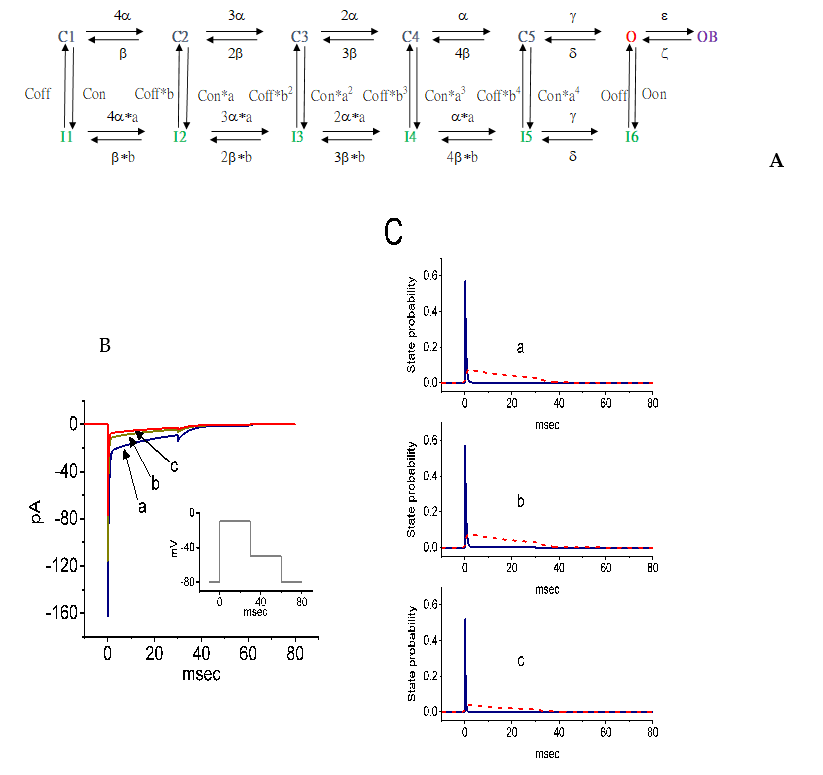
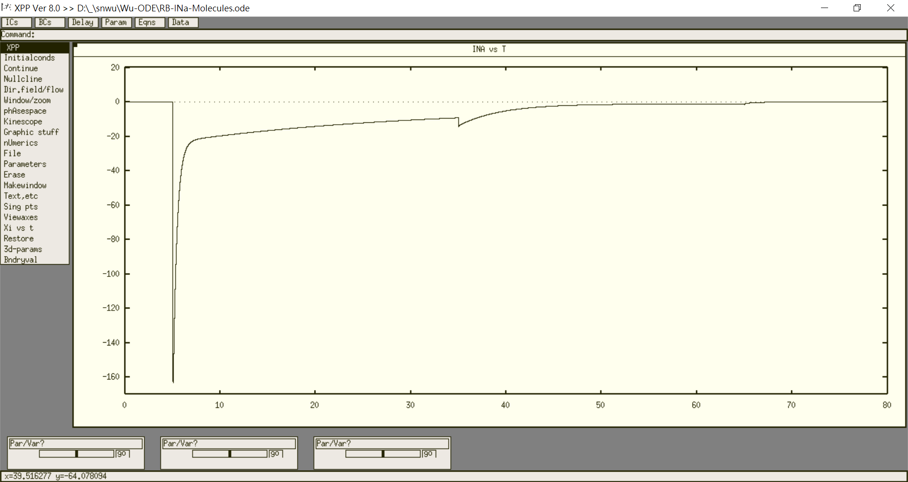

This is the readme for kinetic model of SCN8A-encoded channel associated with the paper.
Reference:
Kuo PC, Kao ZH, Lee SW, Wu SN. Effects of sesamin, the major furofuran lignan ofsesame oil, on the amplitude and gating of voltage-gated Na+ and K+ currents. Molecules 2020;25(13):3062.
Abstract:
Sesamin (SSM) and sesamolin (SesA) are the two major furofuran lignans of sesame oil and they have been previously noticed to exert various biological actions. However, their modulatory actions on different types of ionic currents in electrically excitable cells remain largely unresolved. The present experiments were undertaken to explore the possible perturbations of SSM and SesA on different types of ionic currents, e.g., voltage-gated Na+ currents (INa), erg-mediated K+ currents (IK(erg)), M-type K+ currents (IK(M)), delayed-rectifier K+ currents (IK(DR)) and hyperpolarization-activated cation currents (Ih) identified from pituitary tumor (GH3) cells. The exposure to SSM or SesA depressed the transient and late components of INa with different potencies. The IC50 value of SSM needed to lessen the peak or sustained INa was calculated to be 7.2 or 0.6 μM, while that of SesA was 9.8 or 2.5 μM, respectively. The dissociation constant of SSM-perturbed inhibition on INa, based on the first-order reaction scheme, was measured to be 0.93 μM, a value very similar to the IC50 for its depressant action on sustained INa. The addition of SSM was also effective at suppressing the amplitude of resurgent INa. The addition of SSM could concentration-dependently inhibit the IK(M) amplitude with an IC50 value of 4.8 μM. SSM at a concentration of 30 μM could suppress the amplitude of IK(erg), while at 10 μM, it mildly decreased the IK(DR) amplitude. However, the addition of neither SSM (10 μM) nor SesA (10 μM) altered the amplitude or kinetics of Ih in response to long-lasting hyperpolarization. Additionally, in this study, a modified Markovian model designed for SCN8A-encoded (or NaV1.6) channels was implemented to evaluate the plausible modifications of SSM on the gating kinetics of NaV channels. The model demonstrated herein was well suited to predict that the SSM-mediated decrease in peak INa, followed by increased current inactivation, which could largely account for its favorable decrease in the probability of the open-blocked over open state of NaV channels. Collectively, our study provides evidence that highlights the notion that SSM or SesA could block multiple ion currents, such as INa and IK(M), and suggests that these actions are potentially important and may participate in the functional activities of various electrically excitable cells in vivo.
The state diagram for this Markovian model:

was shown in Figure 9A of the paper
------------------------------------------------------------------------------------------
To run the model:
XPP: start with the command
xpp ode\RB-Ina-Molecules.ode
For a simple run:
Mouse click on Initialconds, and then (G)o.
To reproduce trace similar to Fig. 9B (trace a) of the paper:

Regarding xpp program, please contact with
Bard Ermentrout’s website: http://www.pitt.edu/~phase/, which describes how to get and use xpp.
The model file was submitted by Dr. Sheng-Nan Wu
Department of Physiology
National Cheng Kung University Unversity Medical College
snwu@mail.ncku.edu.tw